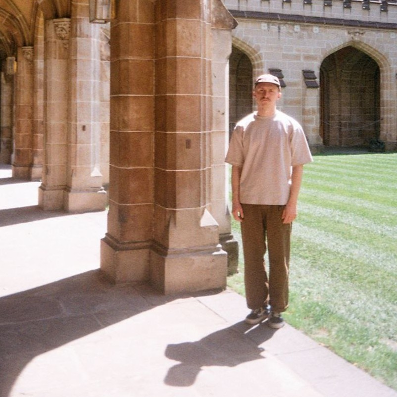

Data Scientist · Astrophysicist · Statistical Modelling · Algorithm Optimization · Data Engineering

Based in
Melbourne, Australia
Astrophysicist turned data scientist, with a background in galaxy clustering and large-scale statistical modelling. I spent my PhD mapping the connection between massive galaxies and dark matter halos, then decided the Universe could wait and brought those skills somewhere with a shorter feedback loop.
Now working on next-generation AI models, contributing to training data quality, evaluation frameworks, and the kind of analytical work that actually makes models less wrong.
Outside of that: I cook obsessively, keep aquariums that are definitely too ambitious, lose sleep over Magic: The Gathering, and will drop everything for a remote trail, a long flight, or a campsite with no signal. If any of that sounds like your kind of person, get in touch.
This is where I keep things. Research, side projects, work in progress. Updated as I go.
Work
Education
Always happy to talk science, data, or anything in between.